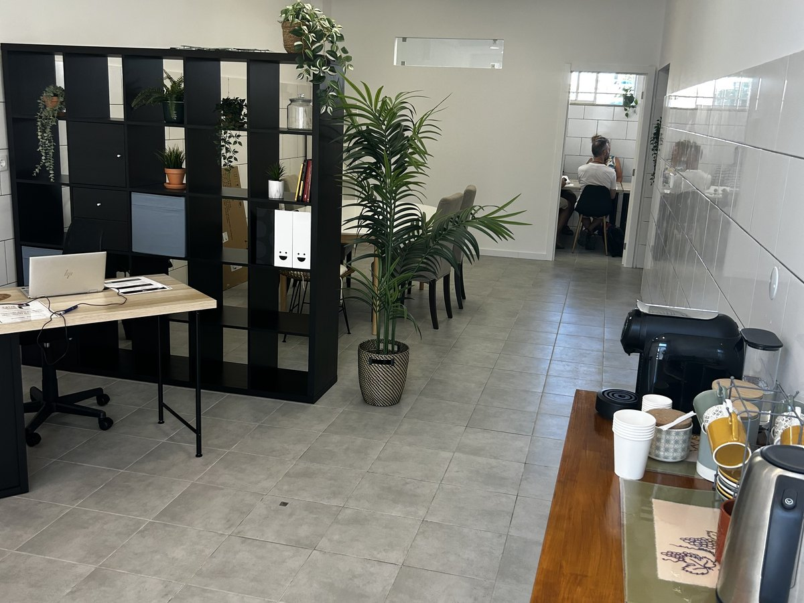

Pequenos grupos de mandarim em Lagos, num ambiente descontraído. Fala desde a primeira aula, com uma professora que torna tudo divertido. Todos os níveis são bem-vindos, desde o teu primeiro nǐ hǎo.
🎁 Experimenta grátis: aula seg 12 out, 18h30 →
45 minutos com a Michelle Kanner na Patio Language School. Não precisas de experiência. Vem dizer as tuas primeiras palavras em mandarim, conhecer a Michelle e o espaço, e depois decide se o curso é para ti.
Dois grupos, duas vezes por semana, aulas de 90 minutos. Ambos abertos a todos os níveis.
Começa na semana de 19 de outubro.
9h15 to 10h45
19 de outubro a 16 de dezembro
15h00 to 16h30
20 de outubro a 17 de dezembro
A gramática do mandarim é surpreendentemente simples. Há muito menos para decorar do que na maioria das línguas europeias, por isso começas depressa a construir frases a sério.
O verbo nunca muda. “Eu vou”, “ela vai”, “nós vamos”: em mandarim é sempre a mesma palavra.
Palavras como “ontem” ou “amanhã” dizem quando. O verbo fica igual.
Um livro, três livros. O nome não muda.
Nada de masculino ou feminino para decorar.
A novidade são os tons. Praticamos desde a primeira aula, em voz alta e com muitas gargalhadas, para que se tornem naturais.
Olá, sou a Michelle! Vivi e trabalhei muitos anos na Ásia, incluindo Taiwan, Singapura, Hong Kong e China, e criei uma ligação profunda com as línguas, as culturas e as tradições asiáticas.
Sou licenciada pela Universidade de Cambridge, com especialização em aprendizagem e educação para pessoas com necessidades especiais. Sou também Mestre de Feng Shui e fundei seis empresas nas áreas da educação, alimentação, imobiliário e agricultura biológica.
Ao longo dos anos, criei cursos online de design de interiores, Feng Shui, cultura e arte do Leste Asiático, e desenvolvi programas educativos com base na minha experiência na Ásia.
Hoje trago toda essa experiência para as minhas aulas de chinês. Acredito que aprender uma língua deve ser simples, prático e divertido, sem stress nem complicações. O meu objetivo é ajudar-te a começar a falar chinês depressa, num ambiente descontraído e acolhedor, onde podes aprender, rir e aproveitar o caminho.
Vem descobrir como o chinês pode ser fácil e divertido!
As nossas aulas são sobre conversa a sério, não só exercícios. Vais praticar em voz alta, à volta de uma mesa, num espaço descontraído onde errar faz parte de aprender.
Poucos alunos, para que todos tenham tempo para falar e fazer perguntas.
Acerta nos sons desde cedo e depois constrói frases que vais mesmo usar.
Nunca estudaste ou queres retomar? Diz-nos e ajudamos-te a encontrar o teu lugar.
Sim. Os dois grupos estão abertos a todos os níveis, incluindo principiantes absolutos.
Na Patio Language School, Praça do Poder Local, Lote 14, Loja C, 8600-524 Lagos.
Primeiro confirmamos o teu lugar e depois combinamos o pagamento.
Inscreve-te online em poucos minutos. Respondemos para confirmar o teu lugar e o pagamento.
Um formulário curto, em inglês, de cerca de 3 minutos. Não precisas de conta Google.
Inscrever agoraPreferes enviar mensagem? WhatsApp +351 928 129 560 ou patiolanguage@gmail.com. Só usamos os teus dados para te contactar sobre estas aulas.